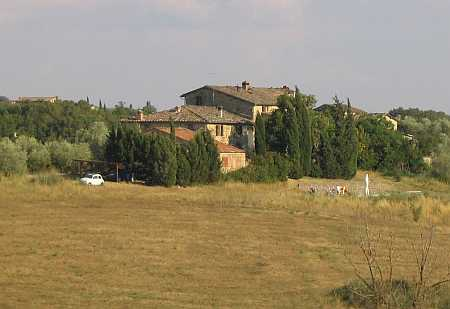

Prendendo da Quercegrossa la strada per Vagliagli, dopo un chilometro circa si trova Petroio e, sulla strada, i poderi del Paradiso e Casagrande. Percorrendo ancora un centinaio di metri, prima di Pietralta, troviamo il bivio per Belvedere dove la strada si immette nei campi in buona discesa per giungere al borro e risalire nel bosco fino al falsopiano, da dove in lontananza si scorge Belvedere, circondato da campi una volta coltivati, da olivi e cipressi.
Fin dai più lontani tempi, dai dati a nostra disposizione, si ricava che il podere di Belvedere, di probabile fondazione alto medioevale, è diviso in due proprietà e tale divisione si manterrà fino a metà Settecento quando le due parti vengono unite dalla famiglia Cumini, fermo restando le due unità poderali con l’aggiunta di uno o due pigionali, conseguenza di qualche ampliamento operato dai Cumini.
Nel 1570 metà Belvedere appartiene a Fabio Andreocci, famiglia senese da non confondere con gli Andreucci, e l’altra metà a Giovanni Battista Peri, il proprietario di Pietralta e di Piano al Colle. Nel 1615 Fausto e Ascanio Andreocci si sono divisi il loro podere e Lattanzio Peri è titolare dell’altra metà. Qualche decennio e una parte degli Andreocci viene acquistata dagli Squarci; quindi nel 1653 abbiamo tre famiglie diverse proprietarie: i Peri per una metà, gli Andreocci e gli Squarci per l’altra. Tre piccoli poderi con una modesta produzione che pagano la decima alla nuova parrocchia di Quercegrossa con una quota totale di 2 staia e 8 misure di vino, pari a quella della sola Pietralta. Vent’anni dopo, nel 1672, gli Andreocci mantengono ancora la proprietà ora riunificata di metà podere e di una pigione, ma l’altra meta, una volta dei Peri, è passata alla famiglia Squarci che la possiede insieme a Belvederino. Ancora un nuovo proprietario nel 1685: la famiglia Barbieri ha rilevato la parte degli Andreocci affiancandosi così agli Squarci. Queste due famiglie conservano la proprietà fino a metà Settecento poi entrambe cedono le rispettive parti di Belvedere alla famiglia Comini, e da allora Belvedere sarà un tutt’uno con due contadini e uno o due pigionali. Circa 130 anni rimasero padroni i Cumini, poi, il 5 maggio 1885, Belvedere passa a Pezzuoli Clemente fu Angelo per compravendita, ingegnere domiciliato nel Comune delle Masse, che acquista anche Belvederino. Pochi anni ed ecco un nuovo proprietario, Viligiardi Valente, e nel 1908 la proprietà passa ai suoi tre figli. Infine, nel 1909, è padrona Pezzuoli Angela fu Cav. Clemente nei Curra, ma l’anno successivo passa alla contessa Martini Francesca fu Conte Enrico, in Radicati, che porta la proprietà alla fattoria delle Lodoline.
Per quanto riguarda l’appartenenza di Belvedere alla parrocchia di Petroio non ci sono dubbi che fin dal suo nascere questo podere abbia fatto parte del comunello di Petroio e di conseguenza entrato nelle pertinenze di detta parrocchia.
Lunga la storia e tante le famiglie che vi hanno abitato iniziando da quel Simone di Pietro che nel 1570 divide Belvedere con Simone Poggi. Due anni dopo è certo che Pasquino Carli è uno dei due mezzadri di Belvedere. Nel 1615 Giovanni Guerranti, Antonio Banchi e un certo Sandro sono i tre contadini che vi abitano e due anni dopo abbiamo Meio Cinughi al posto di Sandro. Il 3 agosto 1657 vi muore la padrona Caterina Andreocci di Domenico, di anni 53. Nel 1661 l’ottantenne Pasquino fu Iacopo Cortecci muore a Belvedere Squarci. Nel 1672 è mezzadro degli Andreocci, Andrea Sali e degli Squarci Tommaso Mori mentre la pigione è vuota. Dal 1685 figura nel podere Squarci, Giovanni Doccini e questa famiglia partirà nel 1720 circa. In tre secoli saranno una quarantina e forse più le famiglie che si alterneranno a Belvedere e tra le quali meritano di essere ricordate per la loro lunga permanenza di oltre trent’anni i Doccini dal 1685 al 1720 ca., i Cavigli dal 1715 al 1750 ca., i Vanni dal 1780 al 1815 ca., i Pianigiani dal 1760 al 1855 c. a. Nell’Ottocento i Cellesi entrano nell’anno 1822 e partono nel 1897 quando i due poderi denominati I e II sono occupati da due famiglie Fabbri. Nel censimento del 1921 una sola di queste vi risiede, e vi resterà fino al 1934 circa, mentre l’altra ha lasciato il podere ai Torsoli, che nel 1936 vi abitano insieme ai Guiggiani. Dai Torsoli ai Manganelli ai Grassi nel 1944, un Pianigiani Annibale e altri Manganelli, mentre i Guiggiani lasceranno ai Massai, poi il silenzio cala a Belvedere.
Capitolo successivo Belvederino
Inizio pagina
Vai all'Indice dei Capitoli